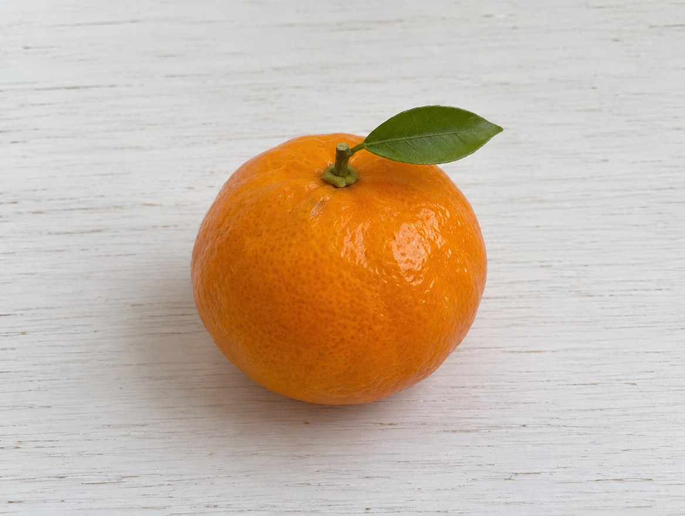
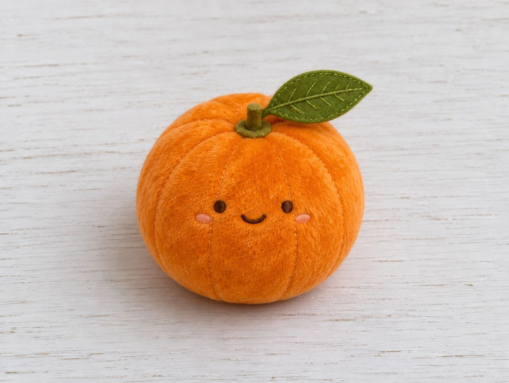
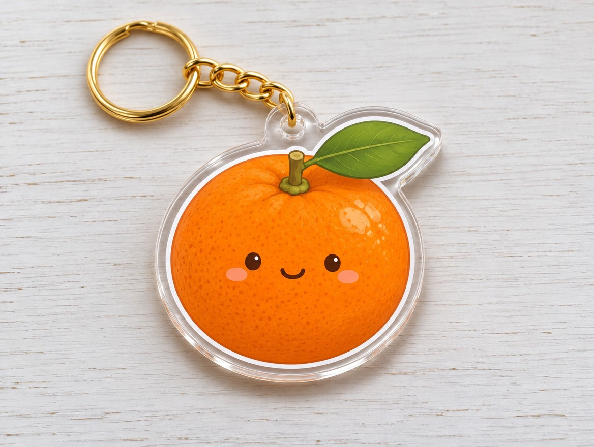
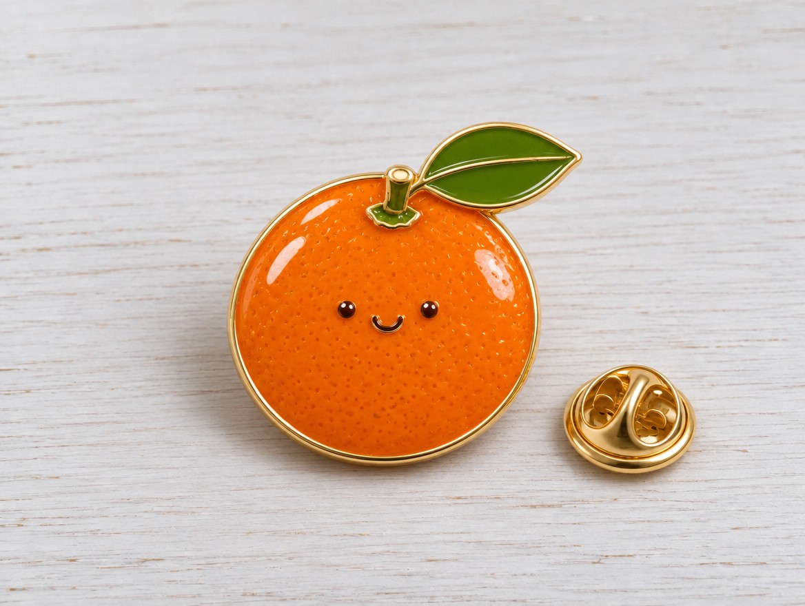
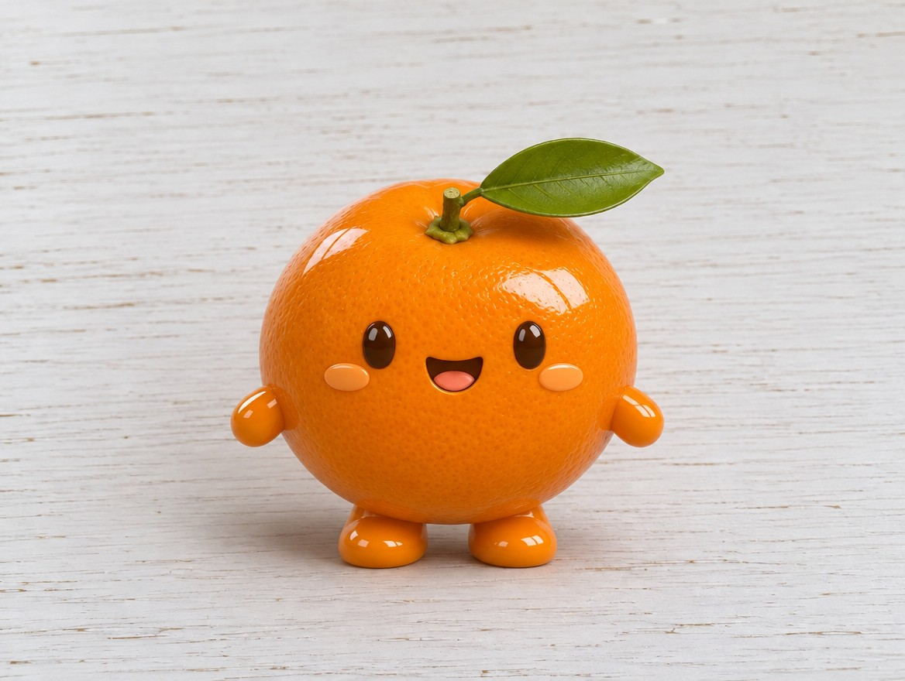
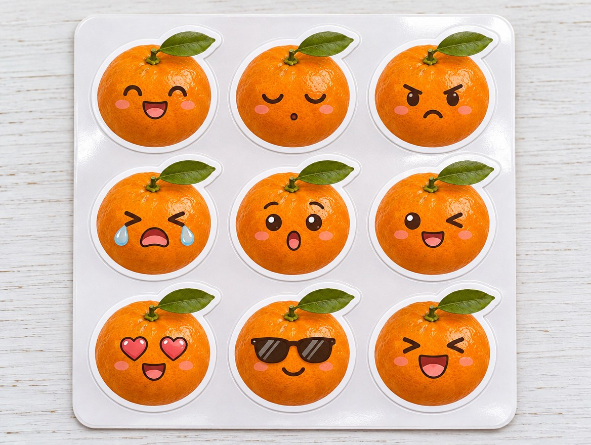

AI 문방구 · 귤 굿즈 5
귤 사진 한 장
→ 캐릭터 굿즈 5
댓글로 신청해주셔서 고마워요. 영상 속 굿즈는 전부 힉스필드(GPT Image 2.6)에 귤 사진 한 장을 넣고 굿즈 종류만 바꿔 만든 결과예요. 굿즈 제작 맡기기 전에 시안 뽑는 용도로 좋아요.
BASE원본 귤 사진 (전)

01plush toy
말랑한 봉제 인형
보송한 천에 자수로 놓은 얼굴, 펠트 잎사귀.
전

후Turn this exact tangerine with its green leaf into a soft plush toy: a round orange minky plush tangerine with a cute small embroidered smiling face and a felt green leaf on top, visible fabric texture and seams, sitting on the same white wooden table in the same soft daylight, same framing and size. Original character, no text, no logos, no tags.
02acrylic keychain
투명 키링
투명 아크릴 판에 그림을 넣고 금색 고리를 달아요.
전

후Turn this exact tangerine with its green leaf into a clear acrylic keychain: a cute flat cartoon illustration of the tangerine with a small smiling face printed inside a transparent rounded acrylic plate with a white outline, a gold metal ring and short chain, lying on the same white wooden table, same soft daylight, same framing. Original character, no text, no logos.
03enamel pin
금테 배지
유광 에나멜에 금속 테두리, 뒷면 고정 핀까지.
전

후Turn this exact tangerine with its green leaf into a small hard enamel pin badge: glossy orange enamel tangerine with a green enamel leaf and a tiny smiling face, thin shiny gold metal outlines, lying on the same white wooden table with its gold pin back clutch next to it, macro product shot, same soft daylight. Original character, no text, no logos.
04vinyl figure
책상 위 피규어
짧은 팔다리가 달린 유광 플라스틱 장난감.
전

후Turn this exact tangerine with its green leaf into a glossy vinyl designer toy figure: a standing tangerine character with a round orange body, a green leaf on its head, tiny arms and little feet, simple happy face, smooth matte-and-gloss plastic finish, standing on the same white wooden table, same soft daylight, same framing. Original character, no text, no logos, no packaging.
05sticker sheet
표정 스티커
표정이 다른 스티커 9개가 한 장에.
전

후Turn this exact tangerine with its green leaf into a die-cut sticker sheet lying flat on the same white wooden table: one sheet with nine kiss-cut cartoon tangerine stickers, each with a different facial expression (happy, sleepy, angry, crying, surprised, wink, love, cool, laughing), thick white sticker borders, slight glossy sheen, same soft daylight. Original character, absolutely no text or letters, no logos.
HOW내 사진으로 하는 법
물건이나 내가 그린 그림을 한 장 올리고 [ ]만 바꾸세요. 실존 캐릭터나 브랜드 로고는 쓰지 말고 내 그림, 내 반려동물, 과일처럼 내 것으로 해야 굿즈로 팔 때도 안전해요.
Turn this exact [피사체] into a [굿즈 종류: plush toy / acrylic keychain / enamel pin / vinyl figure / sticker sheet], same soft daylight, same framing. Original character, no text, no logos.